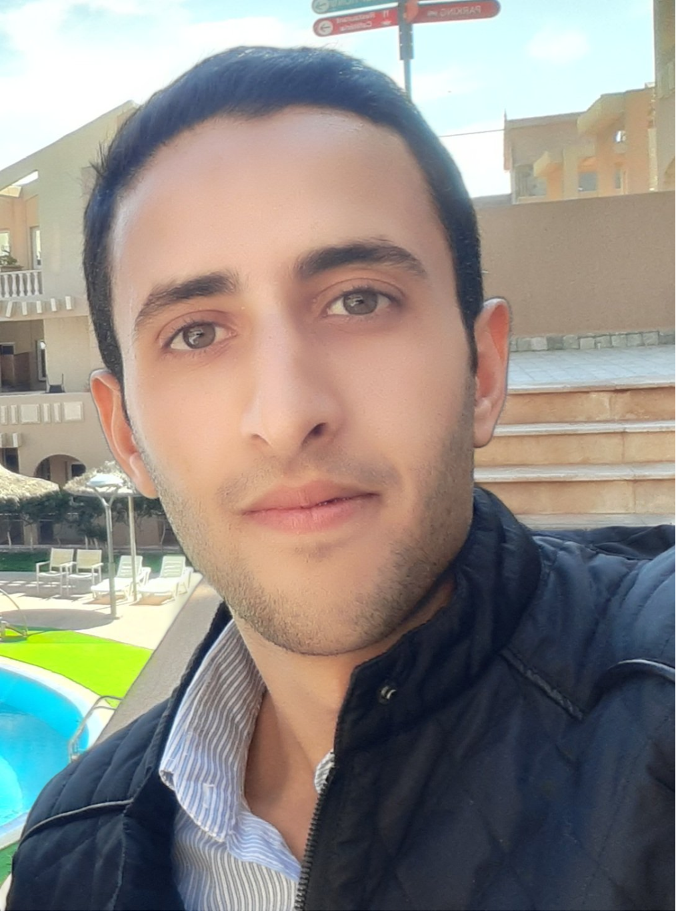

Biography

I am a researcher at LISSI, Paris-Est Créteil University, Paris, France, working on the acceleration of machine learning algorithms and medical image analysis using deep learning. I am currently finalizing my PhD in Biomedical Engineering at Constantine 1 - Frères Mentouri University, Constantine, Algeria, where I also completed my undergraduate studies in Biomedical Engineering. My research interests lie in deep learning and medical image analysis. If you are interested in my work or would like to collaborate, please feel free to contact me at abdesselam.ferdi@gmail.com.
- Phone: +33 745607302
- City: Paris, France
- Degree: PhD
- Email: abdesselam.ferdi@gmail.com
Education
- 2021.5--present: PhD in Biomedical Engineering, SP-Lab, Electronics Department, Constantine 1 - Frères Mentouri University, Constantine, Algeria.
- 2018.9--2020.6: Master in Biomedical Engineering, SP-Lab, Electronics Department, Constantine 1 - Frères Mentouri University, Constantine, Algeria.
- 2015.9--2018.6: Bachelor in Biomedical Engineering, Electronics Department, Constantine 1 - Frères Mentouri University, Constantine, Algeria.
Publications
- Abesselam Ferdi, Said Benierbah, Amir Nakib, Youcef Ferdi, and Abdelmalik Taleb-Ahmed: Quadratic Convolution-based YOLOv8 (Q-YOLOv8) for localization of intracranial hemorrhage from head CT images. Biomedical Signal Processing and Control, 96, 2024.
- Abesselam Ferdi, Said Benierbah, and Youcef Ferdi: YOLOv3-based Intracranial Hemorrhage Localization from CT Images. The 13th International Symposium on Advanced Topics in Electrical Engineering (ATEE), 2023.
- Abesselam Ferdi, Said Benierbah, and Youcef Ferdi: Colorization Technique to im-prove DCNN-based ICH CT Image Classification. 2ème Conférence Nationale sur les Télécommunications et ses Applications (CNTA), 2023.
- Abesselam Ferdi, Said Benierbah, and Youcef Ferdi: U-Net-based Semantic Segmen-tation of COVID-19 Chest CT Images: A Transfer Learning Approach. The seventh International Conference on Image and Signal Processing and their Applications (ISPA), 2022.
- Abesselam Ferdi, Said Benierbah, and Youcef Ferdi: Five Deep Learning Models for Classification of Chest X-Ray Images of COVID-19. The 1st International Conference on Electronics, Artificial Intelligence and New Technologies (ICEAINT), 2021.
Teaching
- 2023--2024: Teaching assistant at Paris-Est Créteil University, Paris, France.
- 2022--2023: Teaching assistant at Constantine 1 - Frères Mentouri University and National Higher School of Biotechnology, Constantine, Algeria.
- 2021--2022: Teaching assistant at Constantine 1 - Frères Mentouri University, Constantine, Algeria.
- 2020--2021: Teaching assistant at National Higher School of Biotechnology, Constantine, Algeria.